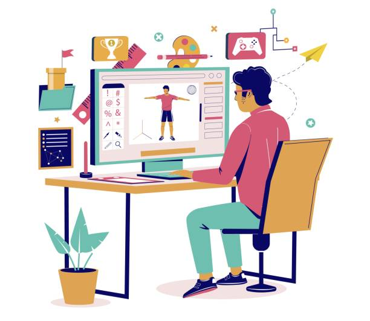

First blog post
September 27, 2025 by Linton Cornwall
I see myself as someone who’s deeply curious and ambitious, with interests that
stretch across a lot of different fields.
I dive into technical problem-solving, software architecture, coding projects
, and design, but I’m just as interested in understanding things like
Jamaican labour laws or how systems and processes work in the real world.
I like getting into the details, whether that means tweaking a line of code
in an ordering system or making sure a concept is explained clearly.
At the same time, I always try to step back and look at the bigger picture.
On a personal level, I think of myself as driven and self-aware,
someone who’s constantly trying to grow, not just in knowledge but
also in ability. Whether it’s working on my grip strength, pushing through
coding challenges, or reflecting on how I’m developing as a person,
I see these things as ways of testing myself and measuring progress.
I value the process of building, whether it’s a system, an idea, or even
just myself, piece by piece. I’m curious about who I’m becoming, and I want
that to reflect both discipline and creativity—a balance of sharp technical
skills and a thoughtful, reflective approach to life.
Second blog post
September 27, 2025 by Linton Cornwall

I’ve always had a natural pull toward creating and improving things.
Whether it’s building out a web page, refining the structure of a project,
or just finding a more efficient way to do everyday tasks, I enjoy the
challenge of making something work better than before. I don’t like
settling for “good enough”—I’d rather put in the extra effort to understand
why something works the way it does and how I can take it further.
That mindset keeps me motivated to keep learning and testing myself,
because every new skill I pick up feels like another tool I can use to
shape what I’m working on.
At the same time, I think balance is important.
I don’t want to just be all about technical knowledge;
I want to develop qualities like persistence, patience, and creativity,
because those matter just as much as skill. I’ve learned that progress often
comes from sticking with something even when it’s difficult, and from being
willing to look at problems in new ways. For me, building myself up isn’t
only about mastering the technical side of things—it’s also about
strengthening my mindset and my habits so I can handle challenges with
confidence and keep pushing toward my goals.